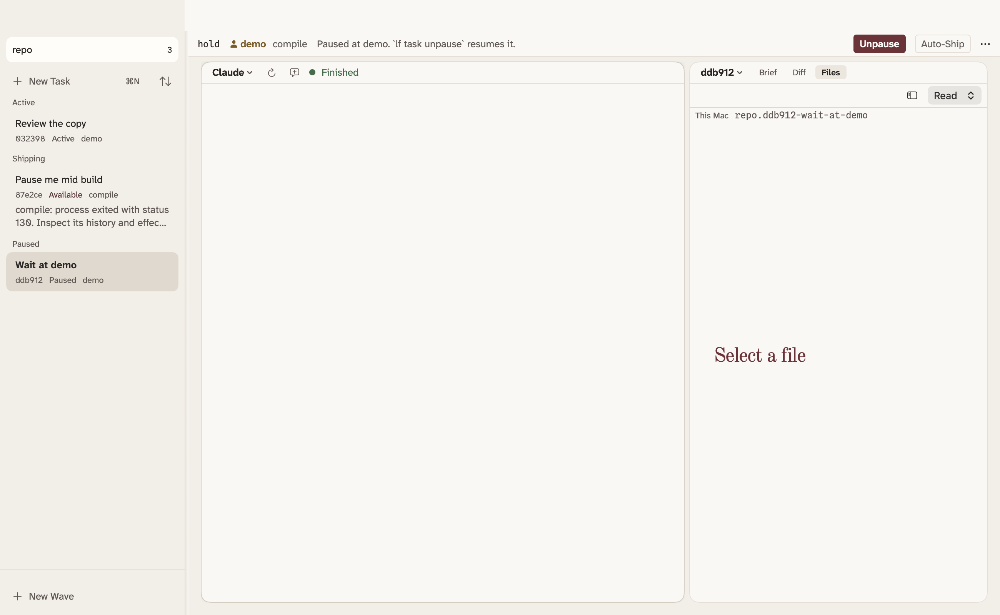

The branch lf (e5efb733f) ran on a private Machine (LF_HOME=/tmp/lfqp2/home) with a disposable repository and bare origin. Real Claude workers ran a real cargo build whose build.rs sleeps 240 s. Graph hold: - interactive: demo, - compile.
| Scenario | What happened |
|---|---|
Builtin code Graph | lf graph show code ends ship-review [interactive], reflect, gate, cmd: land --wait-and-fix, verify. Verify has no interactive mark. |
| Three Tasks, one in auto | Two at demo read Active; the auto Task read Shipping while its build ran. |
| Pause one of two live builds | lf task pause 87e2ce took 1.8 s. Its worker, zsh, cargo and build-script-build were gone; its primary claude --name 87e2ce (PID 3780) kept running. The auto Task's five processes kept running and it finished. lf task list: Shipping / Active / Paused; JSON section: working, working_group: paused. |
| Run, auto on while paused | Both refused: Task is paused; run `lf task unpause 87e2ce` to resume it. |
| Steer to the paused Task's open conversation | lf comment delivered to the primary (delivered_at set, no worker started). Same result for the unpaused control Task. The first try stalled on Claude's folder-trust dialog in both, a fixture problem now in .lf/qa/task-pause.md. |
| What the conversation says about a paused Task | The primary's first turn called it idle, said exit 130 was a Ctrl-C, and offered lf task run 87e2ce, which is refused. Fixed: task_operate has a paused disposition naming lf task unpause. After the rebuild, lf -b task-session answered "is paused … Run lf task unpause 87e2ce … lf task run is refused while the Task is paused." |
| Plain unpause | 87e2ce unpaused. Nothing is left ahead of compile, so it moved to Shipping. Status: "Stopped at compile. `lf task run` starts it again." |
| Pause at an interactive step | lf task pause ddb912 at demo moved it to Paused; its primary stayed alive. |
| Mac sidebar (screen locked, live snapshot mode, isolated Dev bundle) | Active, Shipping and Paused groups. The selected paused Task's bar reads "Paused at demo. `lf task unpause` resumes it." with Unpause; its Session pane is mounted. |

action: no_action. lf task interrupt produces the same wording, so it predates this change. The hold-time sentence ("stopped when the Task was paused") goes away when the hold row is removed.180aad) left the Working list as done. That is expected for this two-step Graph, but its primary conversation was still running.Error: invalid data: (older behavior).